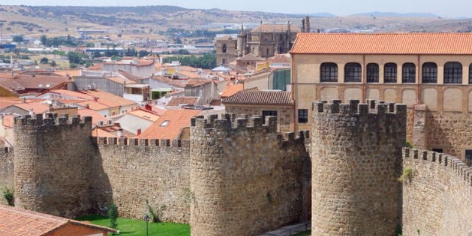

ATLAS SENSIBLE / ESTUDIO 03
El lugar
y su huella.
Ocho capítulos.
Un camino que cambia de dirección.

01 EL UMBRAL

Un lugar empieza
al otro
lado.
La sombra enmarca la llegada.
02 LA MEMORIA MATERIAL
Lo que
resiste.


JUNTA / SOMBRA / TIEMPO
Un muro contiene
muchas miradas.
03 EL ENCUENTRO

Una plaza.
Muchas vidas.

Conversar.Esperar.Volver.
04 LA MEDIDA DE LOS DÍAS


El tiempo
nos mira.
05 LA PAUSA

Menos prisa.
Más lugar.
La entrada, el seto, los pinos.
Un mismo refugio.
06 EL ASOMBRO
La piedra
aprendió a subir.


Del conjunto
a lo irrepetible.
07 EL INTERVALO

Piedra/cielo
El vacío también
construye el horizonte.
08 EL ECO

La ciudad queda.
La mirada cambia.
La figura permanece.
El agua sigue.